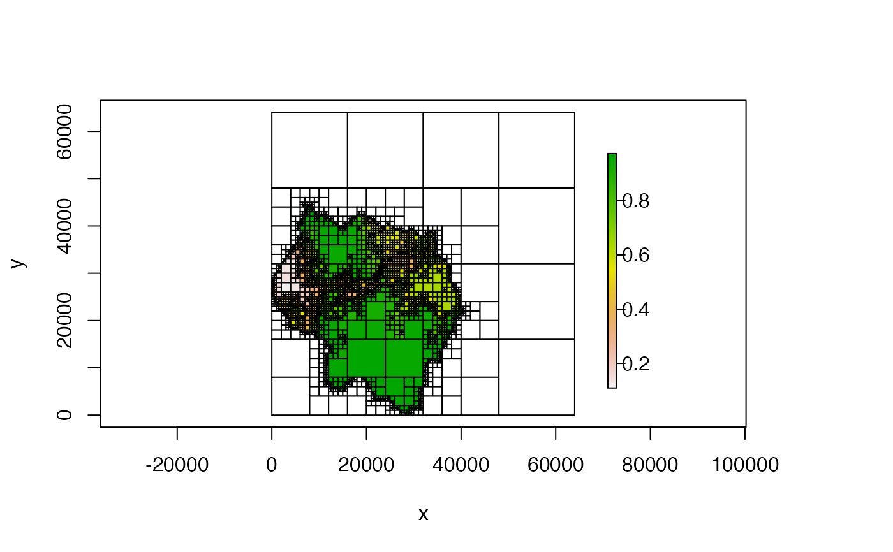
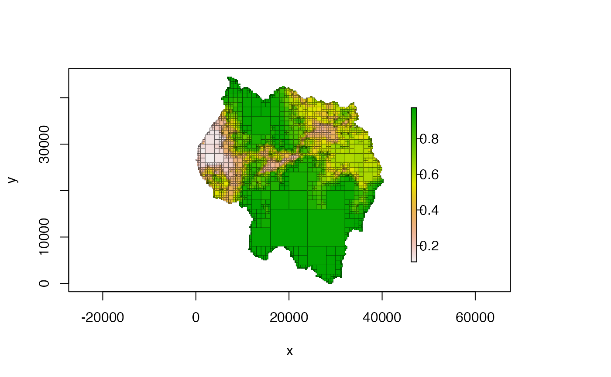
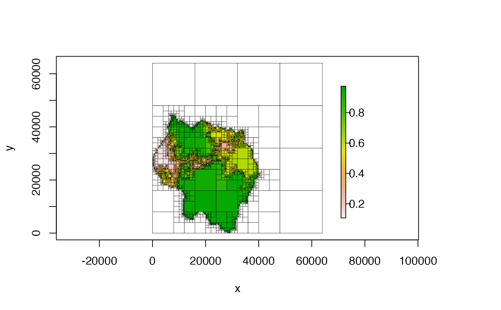
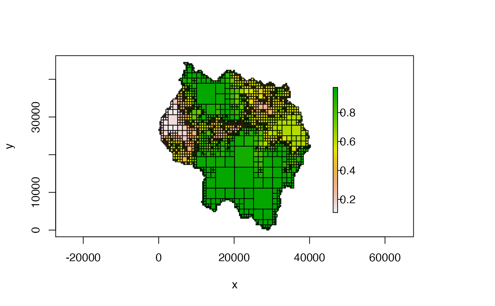

Quadtree from a raster or matrixquadtree.RdCreate a Quadtree from a
RasterLayer or a matrix
# S4 method for ANY quadtree( x, split_threshold = NULL, split_method = "range", split_fun = NULL, split_args = list(), split_if_any_na = TRUE, split_if_all_na = FALSE, combine_method = "mean", combine_fun = NULL, combine_args = list(), max_cell_length = NULL, min_cell_length = NULL, adj_type = "expand", resample_n_side = NULL, resample_pad_nas = TRUE, extent = NULL, proj4string = NULL, template_quadtree = NULL )
| x | a |
|---|---|
| split_threshold | numeric; the threshold value used by the split method
(specified by |
| split_method | character; one of |
| split_fun | function; function used on each quadrant to decide whether
or not to split the cell. Only used when |
| split_args | list; named list that contains the arguments needed by
|
| split_if_any_na | boolean; if |
| split_if_all_na | boolean; if |
| combine_method | character; one of |
| combine_fun | function; function used to calculate the value of a
quadrant that consists of multiple cells. Only used when
|
| combine_args | list; named list that contains the arguments needed by
|
| max_cell_length | numeric; the maximum side length allowed for a
quadtree cell. Any quadrants larger than |
| min_cell_length | numeric; the minimum side length allowed for a
quadtree cell. A quadrant will not be split if its children would be
smaller than |
| adj_type | character; one of |
| resample_n_side | integer; if |
| resample_pad_nas | boolean; only applicable if |
| extent |
|
| proj4string | character; proj4string describing the projection of the
data. Only used when |
| template_quadtree |
|
a Quadtree object
The 'quadtree-creation' vignette contains detailed explanations and
examples for all of the various creation options - run
vignettes("quadtree-creation", package = "quadtree") to view the
vignette.
If adj_type is "expand", NA cells are added to the
raster in order to create an expanded raster whose dimensions are a power
of 2. The smallest number that is a power of two but greater than the
larger dimension is used as the dimensions of the expanded raster. If
adj_type is "resample", the raster is resampled to a raster
with resample_n_side rows and columns. If resample_pad_nas is
TRUE, NA rows or columns are are added to the shorter
dimension before resampling to make the raster square. This ensures that
the quadtree cells will be square (assuming the original raster cells were
square).
When split_method is "range", the difference between the
maximum and minimum cell values in a quadrant is calculated - if this value
is greater than split_threshold, the quadrant is split. When
split_method is "sd", the standard deviation of the cell
values in a quadrant is calculated - if this value is greater than
split_threshold, the quadrant is split.
####### NOTE ####### # see the "quadtree-creation" vignette for more details and examples of all # the different parameter options: # vignette("quadtree-creation", package = "quadtree") #################### library(quadtree) # retrieve the sample data data(habitat) qt <- quadtree(habitat, .15) plot(qt)# we can make it look nicer by customizing the plotting parameters plot(qt, crop = TRUE, na_col = NULL, border_lwd = .3)#---- using a custom split function ---- # split a cell if any of the values are below a given value split_fun = function(vals, args) { if (any(is.na(vals))) { # check for NAs first return(TRUE) # if there are any NAs we'll split automatically } else { return(any(vals < args$threshold)) } } qt <- quadtree(habitat, split_method = "custom", split_fun = split_fun, split_args = list(threshold = .8)) plot(qt)